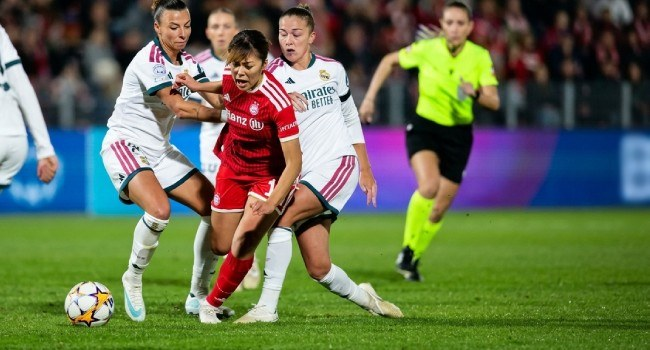

Chelsea Win As Bayern, Madrid Share Points In Women’s Champions League

Chelsea secured a 2-0 win over Roma in the Women’s Champions League on Wednesday, while Bayern Munich fought back from a two-goal deficit to draw 2-2 with Real Madrid. The result gave Chelsea a second win in this season’s competition after they began with a victory and a draw, scoring once across their first two matches.
Chelsea dominated the first half at Plough Lane but could not find a breakthrough. Alyssa Thompson struck the crossbar, and Aggie Beever-Jones was denied by a last-ditch challenge after a pass from Hannah Hampton. The deadlock ended in the 51st minute: Wieke Kaptein cut the ball back for substitute Ellie Carpenter, who slid her finish under goalkeeper Rachele Baldi. Carpenter was making her 50th Champions League appearance. After Melvine Malard missed a chance to extend the lead, Kadeisha Buchanan headed in Kaptein’s cross in the final minute.
In Munich, Real took the lead through Athenea in the seventh minute, then doubled it 15 minutes later when former Bayern forward Lineth Beerensteyn headed home. Bayern responded soon after, with Edna Imade converting Klara Buhl’s corner. Momoko Tanikawa completed the comeback in the 52nd minute, curling in after Real goalkeeper Merle Frohms had parried a shot from Linda Dallmann.
Before kick-off in Munich, players and supporters observed a moment of silence following a train crash near Madrid earlier on Wednesday that killed at least 68 people. Real’s players wore black armbands. Elsewhere, Servette beat OH Leuven 5-1, with Paola Hernandez and Gloria Marinelli each scoring twice. Arsenal were due to host Benfica in Wednesday’s late matches, while Lyon were set to face Inter Milan.
Source: Channels TV